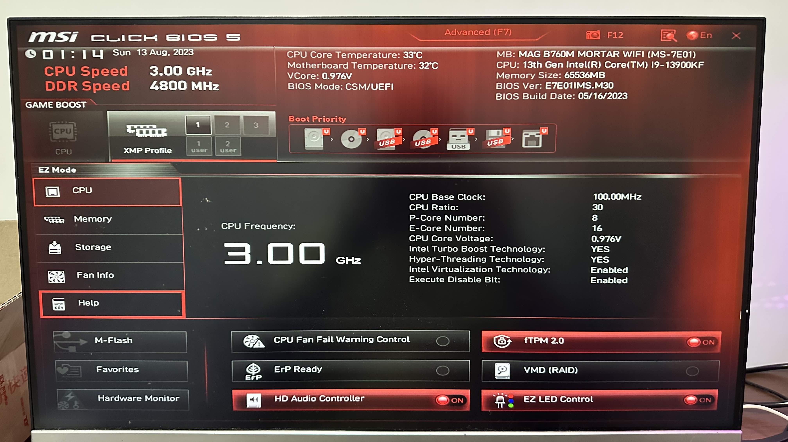

如何组装一台电脑 | 原创，AI翻译

Chat 帮助翻译。因为文章有比较多的产品名词，所以翻译可能不太准确。若需准确信息，请查看英语原文。
视频
快速消化
- 我们想要组建一台用于机器学习的电脑。我们购买了到2023年为止的最新且价格能承受的组件来进行建造。
- 我们购买了诸如英特尔 Core i9-13900KF、微星 MAG B760M Mortar主板和微星Gaming GeForce RTX 4070显卡等组件。
- 电脑无法启动。我们两次向专家寻求帮助。其中一个原因是主板电源连接器松动了。另一个原因是前面板启动按钮连接器松动了。
- 在我们的情况下，我们不需要购买竖装GPU支架。我们应该仔细分析原因，而不是为了快速解决方案而购买额外的组件。
- 我们应该让电缆放置在电脑机箱的另一侧。这样电缆就不会遮挡主板，我们可以清晰地看到它。
- 我们应该更加关注各个组件之间的兼容性，特别是主板、电脑机箱、电源以及其他组件之间的兼容性。它们在很大程度上与其他组件进行互动。
原则
- 全球比较，如JD.com中国，Rakuten Japan，Amazon USA
- Amazon有很好的比较表，可以比较同一系列的产品
- 找到最好的学习资料，查看负面评价
- 重点关注两个昂贵的物品，CPU和GPU
- 购买决策中可能出现的最大错误是什么？
- 前往制造商的网站查看详细信息
- 检查物品的兼容性
- 对于物品的规格，我们会在旅程中逐渐熟悉它们
- 我们可以在网站和参考链接之间跳转学习
- 通过制定最终计划，我们可以了解更多信息并解决关键问题
- 购买你所能负担得起的最优质、最新款的产品
网站
- 法国, https://www.cdiscount.com
- 全球, https://www.amazon.com
- 日本, https://www.rakuten.com
- 中国, https://jd.com
- 韩国, https://www.coupang.com
- 全球, https://www.ebay.com
- 德国, https://www.otto.de
- 北美, https://www.bestbuy.com
开始
这是我在中国的小红书APP中找到的信息。
- 显卡(GPU): MSI 3080 – 5219 人民币(CNY)
- 主板+CPU: ASUS Z790-P + i7-13700KF – 4349 CNY
- 固态硬盘(SSD): Western Digital 1TB – 448 CNY
- 机械硬盘(HDD): Western Digital 2TB – 338 CNY
- 内存(RAM): Kingston 16GB*2 – 598 CNY
- 散热系统: Thermaltake 360 水冷 – 334 CNY
- 电源: Great Wall 85W – 603 CNY
- 机箱: Aigo – 264 CNY
- 鼠标+键盘: 400 CNY
- 显示器: Dell U2723QX – 3600 CNY
- 总近似费用: 16000 CNY
学习和比较
显卡(GPU):
- Amazon, GIGABYTE GeForce RTX 3060 Gaming OC 12G (REV2.0) 显卡, 3X WINDFORCE 风扇, 12GB 192-bit GDDR6, GV-N3060GAMING OC-12GD 视频卡
- Amazon, MSI Gaming GeForce RTX 3080 LHR 10GB GDRR6X 320-Bit HDMI/DP Nvlink Torx Fan 4 RGB Ampere Architecture OC Graphics Card (RTX 3080 Gaming Z Trio 10G LHR) (翻新)
- Amazon, MSI Gaming GeForce RTX 4060 8GB GDRR6 128-Bit HDMI/DP Nvlink TORX Fan 4.0 Ada Lovelace Architecture Graphics Card (RTX 4060 Ventus 2X Black 8G OC)
- Amazon, ASUS Dual GeForce RTX™ 4060 Ti OC Edition 8GB GDDR6 (PCIe 4.0, 8GB GDDR6, DLSS 3, HDMI 2.1, DisplayPort 1.4a, Axial-tech Fan Design, 0dB Technology, and More)
- Amazon, MSI Gaming GeForce RTX 3080 LHR 12GB GDRR6X 384-Bit HDMI/DP Nvlink Torx Fan 3 Ampere Architecture OC Graphics Card (RTX 3080 Ventus 3X Plus 12G OC LHR)
- Amazon, MSI Gaming GeForce RTX 3060 12GB 15 Gbps GDRR6 192-Bit HDMI/DP PCIe 4 Torx Twin Fan Ampere OC Graphics Card, GeForce RTX 3060 VENTUS 2X 12G OC
- Amazon, MSI Gaming GeForce RTX 4070 12GB GDRR6X 192-Bit HDMI/DP Nvlink TORX Fan 4.0 Ada Lovelace Architecture Graphics Card (RTX 4070 Ventus 3X 12G OC)
- Amazon, MSI Gaming GeForce RTX 4070 12GB GDRR6X 192-Bit HDMI/DP Nvlink TORX Fan 4.0 Ada Lovelace Architecture Graphics Card (RTX 4070 Gaming X Trio 12G)
主板(Motherboard):
- Amazon, ASUS ROG Strix B550-A Gaming AMD AM4 Zen 3 Ryzen 5000 & 3rd Gen Ryzen ATX Gaming Motherboard (PCIe 4.0, 2.5Gb LAN, BIOS Flashback, Dual M.2 with heatsinks, Addressable Gen 2 RGB Header and Aura Sync)
- Amazon, MSI MAG B550 TOMAHAWK Gaming Motherboard (AMD AM4, DDR4, PCIe 4.0, SATA 6Gb/s, M.2, USB 3.2 Gen 2, HDMI/DP, ATX, AMD Ryzen 5000 Series processors)
- Amazon, MSI MAG B660 Tomahawk WiFi DDR4 Gaming Motherboard (ATX, 12th Gen Intel Core, LGA 1700 Socket, DDR4, PCIe 4, 2.5G LAN, M.2 Slots, Wi-Fi 6)
- Amazon, GIGABYTE B550M DS3H AC (AM4 AMD/B550/Micro ATX/Dual M.2/SATA 6Gb/s/USB 3.2 Gen 1/PCIe 4.0/HMDI/DVI/DDR4/Motherboard)
- Amazon, MSI B760 Gaming Plus WiFi Gaming Motherboard (Supports 12th/13th Gen Intel Processors, LGA 1700, DDR5, PCIe 4.0, M.2, 2.5Gbps LAN, USB 3.2 Gen2, Wi-Fi 6E, ATX)
- Amazon, MSI MAG B760M Mortar WiFi Gaming Motherboard (Supports 12th/13th Gen Intel Processors, LGA 1700, DDR5, PCIe 5.0, M.2, 2.5Gbps LAN, USB 3.2 Gen2, Wi-Fi 6E, mATX)
- Amazon, ASUS TUF Gaming Z790-Plus WiFi LGA 1700(Intel®12th&13th Gen) ATX Gaming Motherboard(PCIe 5.0,DDR5,4xM.2 Slots,16+1 DrMOS,WiFi 6,2.5Gb LAN,Front USB 3.2 Gen 2 Type-C®,Thunderbolt 4(USB4),Aura RGB)
- Amazon, ASUS Prime Z790-P WiFi LGA 1700(Intel® 13th &12th Gen) ATX Motherboard (PCIe 5.0,DDR5, 14+1 Power Stages,3X M.2,WiFi 6,Bluetooth v5.2,2.5Gb LAN, Front Panel USB 3.2 Gen 2 Type-C®, Thunderbolt™ 4/USB4)
CPU:
- Amazon, Intel Core i7-13700KF (Latest Gen) Gaming Desktop Processor 16 cores (8 P-cores + 8 E-cores) - Unlocked
- Rakuten, Intel Core i7 13700KF BOX 第13世代インテルCore i7プロセッサー GPU非搭載 CPU
- JD.com, 英特尔(Intel)酷睿 奔腾 CPU处理器 台式机 原盒 12代 i9-12900KF【16核24线程】, 3799 CNY
- Amazon, Intel Core i9-13900KF (Latest Gen) Gaming Desktop Processor 24 cores (8 P-cores + 16 E-cores) - Unlocked
固态硬盘(SSD):
- Amazon, Western Digital 500GB WD Blue SA510 SATA Internal Solid State Drive SSD - SATA III 6 Gb/s, 2.5”/7mm, Up to 560 MB/s
- Amazon, SAMSUNG Electronics 870 EVO 2TB 2.5 Inch SATA III Internal SSD (MZ-77E2T0B/AM)
- Amazon, Western Digital 1TB WD Blue SN570 NVMe Internal Solid State Drive SSD - Gen3 x4 PCIe 8Gb/s, M.2 2280, Up to 3,500 MB/s - WDS100T3B0C
- JD, 三星（SAMSUNG）1TB SSD固态硬盘 M.2接口(NVMe协议PCIe 4.0 x4) 980 PRO （MZ-V8P1T0BW）
- Amazon, Samsung 970 EVO Plus SSD 2TB NVMe M.2 Internal Solid State Hard Drive, V-NAND Technology, Storage and Memory Expansion for Gaming, Graphics w/ Heat Control, Max Speed, MZ-V7S2T0B/AM
- Rakuten, Western Digital 1TB WD グリーン 内蔵SSD ソリッドステートドライブ - SATA III 6Gb/s 2.5/7mm 最大545MB/s - WDS100T3G0A
- Walmart, WD Blue 1TB SA510 SATA Internal Solid State Drive SSD - WDBB8H0010BNC-WRWN
- Amazon, SAMSUNG 870 EVO SATA III SSD 1TB 2.5” Internal Solid State Drive, Upgrade PC or Laptop Memory and Storage for IT Pros, Creators, Everyday Users, MZ-77E1T0B/AM
- Amazon, SAMSUNG 980 SSD 1TB PCle 3.0x4, NVMe M.2 2280, Internal Solid State Drive, Storage for PC, Laptops, Gaming and More, HMB Technology, Intelligent Turbowrite, Speeds of up-to 3,500MB/s, MZ-V8V1T0B/AM
机械硬盘(HDD):
- Amazon, Seagate Portable 2TB External Hard Drive HDD — USB 3.0 for PC, Mac, PlayStation, & Xbox -1-Year Rescue Service (STGX2000400)
- Amazon, WD 6TB My Book Desktop External Hard Drive, USB 3.0, External HDD with Password Protection and Auto Backup Software - WDBBGB0060HBK-NESN
- Amazon, Seagate ST8000DM008 BarraCuda 8TB Internal Hard Drive HDD – 3.5 Inch Sata 6 Gb/s 5400 RPM 256MB Cache for Computer Desktop
- JD.com, 西部数据 台式机机械硬盘 WD Blue 西数蓝盘 4TB 5400转 256MB SATA CMR
- JD.com, 希捷(Seagate)台式机硬盘 2TB 7200转 256MB SATA 机械硬盘 希捷酷鱼BarraCuda系列(ST2000DM008)
内存(RAM):
- Amazon, CORSAIR VENGEANCE DDR5 RAM 32GB (2x16GB) 5600MHz CL36 Intel XMP iCUE Compatible Computer Memory - Black (CMK32GX5M2B5600C36)
- Amazon, Corsair VENGEANCE LPX DDR4 RAM 32GB (2x16GB) 3200MHz CL16 Intel XMP 2.0 Computer Memory - Black (CMK32GX4M2E3200C16)
- Amazon, Samsung 16GB DDR4 3200MHz SODIMM PC4-25600 CL22 2Rx8 1.2V 260-Pin SO-DIMM Laptop Notebook RAM Memory Module M471A2K43DB1-CWE
- JD.com, 美商海盗船（USCORSAIR） 64GB(32G×2)套装 DDR5 6000 台式机内存条 复仇者系列 游戏型 黑色
电脑散热器(Cooler):
- Amazon, ID-COOLING FROSTFLOW X 240 CPU Water Cooler AIO Cooler 240mm CPU Liquid Cooler White LED 2x120mm PWM Fans, Intel 1700/1200/115X, AMD AM5/AM4
- Amazon, Thermalright Frozen Prism 240 Black ARGB Liquid CPU Water Cooler with 120mm ARGB PWM Fan,240 Black Cold Row Specification, Computer Water Cooler for AMD/AM4/AM5
- Amazon, Thermalright Frozen Magic 240 Scenic V2 Water Cooling CPU Cooler, 240 White Cooling Row Specification, 2×120mm PWM Fan, S-FDB V2.0 Bearing, Suitable for AMD/AM4/AM5, Intel 1700/1150/1151/1200 /2066
- JD.com, 大水牛（BUBALUS）Q6 CPU散热器（支持AMD/多平台/9CM蓝光风扇/附带硅脂/台式电脑风冷散热器）
- JD.com, Thermalright Frozen Prism 240
电脑电源(Computer Power Supply):
- Amazon, Thermaltake SMART 600W ATX 12V V2.3/EPS 12V 80 Plus Certified Active PFC Power Supply PS-SPD-0600NPCWUS-W
- Amazon, Thermaltake Toughpower GX1 RGB 600W Gold SLI/Crossfire Ready Continuous Power RGB LED ATX12V v2.4 / EPS v2.92 80 Plus Gold Certified 5 Year Warranty Non Modular Power Supply PS-TPD-0600NHFAGU-1
- Amazon, Thermaltake Toughpower GF1 650W 80+ Gold SLI/ CrossFire Ready Ultra Quiet 140mm Hydraulic Bearing Smart Zero Fan Full Modular Power Supply 10 Year Warranty PS-TPD-0650FNFAGU-1
电脑机箱：
亚马逊，SZSKYING 游戏电脑机箱带10个ARGB风扇，电脑主机机箱风量3.0 USB，钢化玻璃面板遥控器控制黑色。
京东，Aigo Yogo M2
参考资料
了解不同的英特尔处理器核心。
询问ChatGPT：
英特尔CPU中P-cores和E-cores有什么区别？
i9和i7有什么区别？
如果我想进行机器学习，我应该购买i7还是i9？
i9 13900
https://cpu.userbenchmark.com/Compare/Intel-Core-i9-13900-vs-Intel-Core-i9-13900F/m1977296vsm1994287
英特尔处理器中的F是什么意思？
如果您的英特尔® Core™ 台式机处理器的产品线后缀中包含字母F，那么您需要在系统中使用独立显卡。如果使用集成显卡端口，处理器将无法启动。
英特尔的K和F哪个更好？
如果您的英特尔处理器有K，这意味着它可以超频并且已解锁。F表示该处理器没有iGPU或集成显卡。KF系列处理器往往比K处理器便宜，通常没有iGPU。
https://versus.com/en/asus-prime-z790-p-d4-vs-msi-mag-b760m-mortar-max-wifi
GeForce RTXTM 4070 GAMING X TRIO 12G显卡与Thermaltake Toughpower GF1 650W电源是否匹配？
仔细阅读产品的描述，就像这个一样。
ASUS TUF Gaming Z790-Plus WiFi LGA 1700。
- 英特尔LGA 1700插槽：支持第12代和第13代英特尔Core处理器，支持PCIe 5.0，DDR5和预装Windows 11
- 强化电源解决方案：16+1 DrMOS，ProCool插座，军规级TUF元件和Digi+ VRM，以获得最大的耐久性和性能
- 全面散热：VRM散热器，PCH无风扇散热器，M.2散热器，混合风扇接口和Fan Xpert 4实用程序
- 极速游戏网络：WiFi 6 AX201（802.11 ax），Intel I225-V 2.5Gb LAN，TUF LANGuard和TurboLAN技术
- 最快的连接：4x M.2/NVMe SSD，前面板USB 3.2 Gen 2 Type-C头，USB Gen 2x2 Type-C和Thunderbolt 4（USB4）头
- PC DIY友好：SafeDIMM，PCIe 5.0 Safeslot，Q-LED，M.2 Q-Latch，预安装I/O护罩
- 新TUF Gaming外观：新的ID设计，与大量兼容PC设备的可同步LED效果，包括可寻址的RGB灯带与Aura Sync
- 沉浸式游戏音频和AI降噪：Realtek S1200A编解码器提供原始音频质量，让您更深入地参与游戏动作或增强您喜爱的音乐曲目或视频。借助ASUS AI Noise Canceling Mic技术，清晰沟通。
https://timdettmers.com/2023/01/30/which-gpu-for-deep-learning/
https://timdettmers.com/2018/12/16/deep-learning-hardware-guide/
https://www.msi.com/Graphics-Card/GeForce-RTX-4070-GAMING-X-TRIO-12G/Specification
https://www.intel.com/content/www/us/en/products/sku/230497/intel-core-i913900kf-processor-36m-cache-up-to-5-80-ghz/specifications.html
https://www.msi.com/Motherboard/MAG-B760M-MORTAR-WIFI
https://www.thermaltake.com/toughpower-gf1-650w-tt-premium-edition.html
https://file.thermaltake.com/file/qig/Connect_PCIe_Cables_to_High_Power_Consumption_GPU_en.pdf，正确连接高功耗显卡的PCIe电缆？
https://pcpartpicker.com/forums/topic/359090-what-is-this-8-pin-connector-on-my-hard-drive, 这个硬盘上的8针连接器是什么？
最终
来自京东。
CPU，英特尔酷睿i9-13900KF（最新一代）游戏桌面处理器24核（8 P核 + 16 E核）- 解锁，4709元人民币
主板，MSI MAG B760M迫击炮WiFi游戏主板（支持第12/13代Intel处理器，LGA 1700，DDR5，PCIe 5.0，M.2，2.5Gbps LAN，USB 3.2 Gen2，Wi-Fi 6E，mATX），1299元人民币
GPU，MSI Gaming GeForce RTX 4070 12GB GDRR6X 192位HDMI / DP Nvlink TORX风扇4.0 Ada Lovelace架构显卡（RTX 4070 Gaming X Trio 12G），5199元人民币
SSD，三星980 SSD 1TB PCle 3.0x4，NVMe M.2 2280，内部固态硬盘，适用于PC，笔记本电脑，游戏等，HMB技术，智能Turbowrite，速度高达3,500MB / s，MZ-V8V1T0B / AM，399元人民币
HDD，西部数据2TB WD Blue PC内部硬盘 - 7200 RPM等级，SATA 6 Gb / s，256 MB缓存，3.5” - WD20EZBX，428元人民币
RAM，CCORSAIR复仇DDR5 RAM 64GB（2x32GB）6000MHz CL30 AMD Expo iCUE兼容计算机内存 - 灰色（CMK64GX5M2B6000Z30），1379元人民币
冷却器，Thermalright冷冻棱镜240白色ARGB AIO水冷器，液体CPU冷却器，2×120mm PWM风扇水冷系统，1850RPM高速，兼容AMD / AM4 / AM5和Intel LGA1150 / 1151 / 1200 / 2011 / 1700，413元人民币
电源，Corsair CX650F RGB，750瓦，80 PLUS，全模块化RGB白色电源，398元人民币
PC机箱，Aigo月光宝盒镜Mini，299元人民币
SATA 数据线，Cable Matters 3 包 90 度直角 SATA 数据线，长度 18 英寸（6.0 Gbps SATA III 数据线，适用于 SSD，SATA SSD 数据线，SATA 3 数据线）黑色，售价 19 人民币。
鼠标、键盘、显示器：我家里已经有多余的。
总计：约14000元人民币
这只是我根据我目前所知和我的预算做出的最终决定，请您也进行自己的研究。
组装指南
http://intel.cn/ProcessorInstall 设置 CORSAIR CX-F RGB 系列电源供应器
https://www.intel.cn/content/www/cn/zh/support/articles/000088402/processors.html
CORSAIR CX-F RGB 系列电源供应器设置教程
MSI 电脑组装教程（完整版）
THERMALRIGHT FROZEN PRISM CPU 散热器安装指南（适用于英特尔 LGA1700，AMD AM4 AM5）
MSI如何安装前面板连接器（JFP1）
如何连接计算机机箱电缆、电源电缆等 - 电脑布线技巧
图形卡安装非常简单！为小白准备的四个简单步骤
BIOS 信息
CPU 信息：

还有风扇、内存和存储信息。
安装操作系统
Ubuntu 官方网站
通过 5 个步骤在 Ubuntu 上创建具有 GPU 加速的机器学习环境
在 macOS 上创建可启动的 USB 磁盘
https://ubuntu.com/tutorials/create-a-usb-stick-on-macos#4-install-and-run-etcher
安装 Ubuntu 桌面版
https://ubuntu.com/tutorials/install-ubuntu-desktop
反思
我们应该让电脑机箱的电缆放置在另一侧，这样电缆就不会遮挡主板，我们可以清晰地看到它。
我们应该提前向客户支持索取产品相关信息，例如安装视频等。他们更喜欢将长视频上传到大型视频平台，而不是在电商平台上展示。
我们请了两次专家来检查为什么我们的电脑无法启动。其中一个原因是主板电源连接器松动了。另一个原因是前面板启动按钮连接器松动了。
当我们请专家帮助时，我们需要亲自操作以便学习。他们应该只是指导我们。否则，我们很容易忘记，在下次遇到问题时不知道该怎么办。
在我们的情况下，我们不需要购买类似这个链接中的垂直 GPU 支架。我们应该仔细分析，而不是为了快速解决方案而购买额外的组件。
我们应该更加关注各个组件之间的兼容性，特别是主板、电脑机箱、电源以及其他组件之间的兼容性。它们在很大程度上与其他组件进行互动。
更新
我后悔没有选择更大的显卡，12GB的显存已无法满足我的需求。